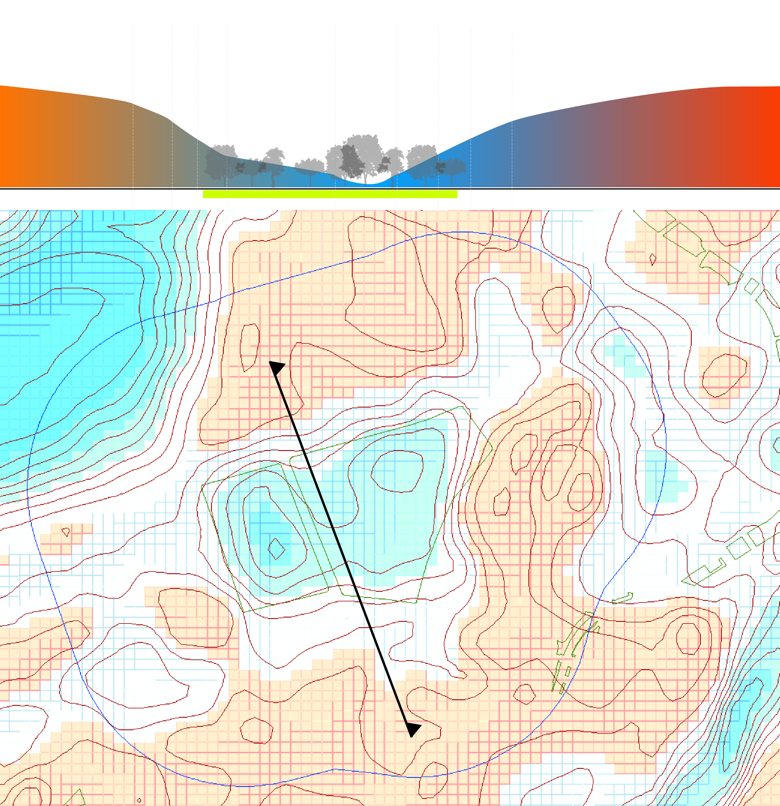
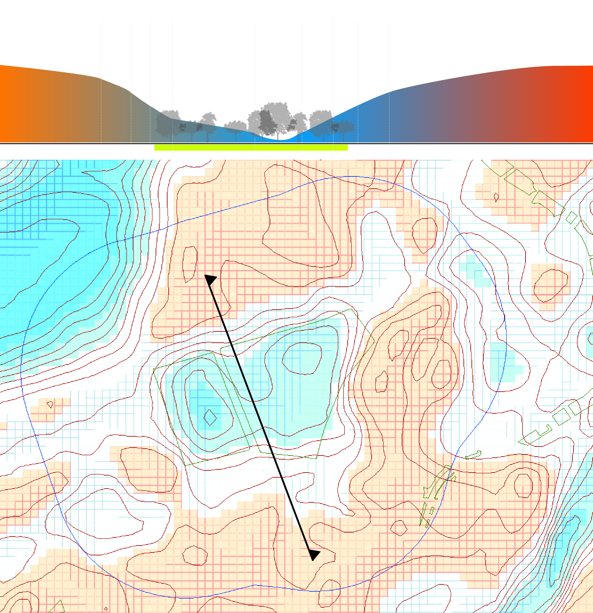

Excessive Heat
Urban heat island map for August 1st 2017

A closer look reveals the parks' contribution to urban cooling

Boston common's cooling buffer exceeds 200 meters
Climate Change’s Impacts on Public Spaces in Boston
What dangers does climate change, in particular sea-level rise, coastal flooding, and excessive urban heat, have on major public spaces in the Boston region?
Initial presentation March 2018
In a city housing hundreds of parks throughout Boston’s many neighborhoods, choosing six to analyze for climate change impacts was exceedingly difficult. Data on Boston parks is collected and maintained by the City of Boston in its Open Space dataset (https://data.boston.gov/dataset/open-space). This dataset contains 1006 distinct spaces identified as Open Space by the City of Boston.
Some parks in Boston are represented in this dataset by more than one record – especially if the single open space unit is separated or bisected by roadways. As such, the data entries in the spreadsheet with the following Open Space IDs were combined in GIS to get the final JSON shapes for the public spaces identified in BOLD above. All other parks above are identified by a single Open Space ID in the Open Space dataset or were not included in our final analysis. These six distinct parks cover the breadth of central Boston.s
Combined Open Space IDs:
When determining which six parks to examine the heat island and sea rise/flooding impacts, we followed two rules: 1) Parks must be publicly owned and accessible; and, 2) There must be some variation in park size (small to large), shape (linear to square) and type (waterfront, biking/walking, gathering space, transit corridor).
As the crown jewel and most prominent of public parks in Boston due to its central position on the Freedom Trail, the Boston Common & Public Garden is technically two separate parks. The Boston Common is the oldest public park in the United States, founded in 1634, and is 50 acres in size. The Boston Public Garden, founded in 1837, is separated from the Common by Charles Street and is 24 acres in size.
The RFK Greenway is a relatively new park as it was developed following the relocation of the highway under the Boston during the Big Dig. It was completed in 2008 and the Rose Fitzgerald Kennedy Greenway Conservancy maintains its 17 acres. Its shape follows the contours of the underground highway from North End to Chinatown and South Station.
As we are interested in the impacts of climate change on public spaces and public transit, we decided to focus on the Southwest Corridor Park which aligns with a major public transit system: the Orange Line MBTA track from Back Bay to Forest Hills. The Park itself is 4.1 miles long and covers 52 acres. Therefore, we excluded both Commonwealth Avenue and the Charles River Reservation even though both are linear parkways alongside major roads.
As an extremely visible landmark as visitors fly into Logan International Airport, Castle Island & the Strandaway. Castle Island is home to the 19th Century Fort Independence and covers 22 acres on the edge of Boston Harbor.
Alongside the RFK Greenway in Boston is the Boston Aquarium and Long Wharf, which consists of two historic wharfs and a public access harborwalk.
Although a prominent landmark, Fenway Park Field is privately owned and not publicly accessible. As such it was not included in this analysis.
Charlesgate, designed by Olmsted in the late 1800s is a connection of Emerald Necklace and Charles River.
The last park included is the Back Bay Fens, designed by Olmsted in the late 1800s. It is a main feature of Boston’s Emerald Necklace system that covers over 1000 acres.
Urban heat island map for August 1st 2017
A closer look reveals the parks' contribution to urban cooling
Boston common's cooling buffer exceeds 200 meters
Max Arnell
Cristina Alene Logg
Xuenan Ni
Yael Nidam